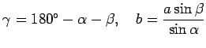

Inhalt Index DeskTop Bronstein

 Geometrie Ebene Trigonometrie Berechnungen in ebenen schiefwinkligen Dreiecken
Geometrie Ebene Trigonometrie Berechnungen in ebenen schiefwinkligen Dreiecken


In Übereinstimmung mit den Kongruenzsätzen ist ein Dreieck durch drei voneinander unabhängige Stücke bestimmt, unter denen sich mindestens eine Seite befinden muß. Daraus leiten sich die vier sogenannten Grundaufgaben im schiefwinkligen Dreieck ab. Sind von 6 Bestimmungsgrößen eines schiefwinkligen Dreieckes (3 Winkel  und die ihnen gegenüberliegenden 3 Seiten a,b,c) drei gegeben, dann lassen sich die übrigen drei Bestimmungsgrößen mit Hilfe der in der Tabelle angegebenen Gleichungen berechnen.
und die ihnen gegenüberliegenden 3 Seiten a,b,c) drei gegeben, dann lassen sich die übrigen drei Bestimmungsgrößen mit Hilfe der in der Tabelle angegebenen Gleichungen berechnen.
Im Unterschied zur sphärischen Trigonometrie, läßt sich für das ebene schiefwinklige Dreieck aus der Kenntnis dreier gegebener Winkel keine der Seiten berechnen.
(S. 2. Grundaufgabe der sphärischen Trigonometrie.)
| Gegeben | Formeln zur Berechnung der übrigen Größen | |
| 1. | 1 Seite und 2 Winkel |
 |
| 2. | 2 Seiten und der eingeschlossene Winkel |
|
| 3. | 2 Seiten und der einer von ihnen gegenüberliegende Winkel |
 Für ist und eindeutig bestimmt. Für a< b sind folgende Fälle möglich:
|
| 4. | 3 Seiten (a,b,c) | , |